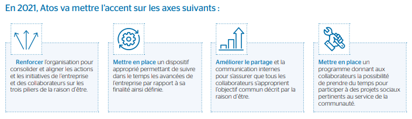

L’activité de l’entreprise :
AtoS figure parmi les 10 plus grandes ESN (Entreprise du Service Numérique). Elle s’organise autour de 3 branches d’activités :
- Infogérance (gestion de tâches informatique confié par une entreprise à un prestateur extérieur)
- digitalisation des entreprises clientes
- intégration de système et prestations de conseil
AtoS a pour objectif de renforcer sa position mondiale dans les services de transformation digitale tout en respectant l’environnement et en appliquant les principes fondamentaux du développement durable.
AtoS propose des solutions tel que l’informatique avancé (calcul haute performance, serveur d’Entreprises, Systèmes intégrés), l’entreprise développe aussi l’automatisation avec la robotique, l’intelligence artificielle. De plus, elle propose des solutions cloud pour sécuriser les données et pouvoir y accéder à tout moment. La cybersécurité est l’un de leur point fort : protection et gouvernance des données, cloud sécurisé...
Son organisation (géographique, opérationnelle, juridique) :
Le siège social de l’entreprise est situé à Bezons (Val d’oise), France mais AtoS fait des opérations dans le monde entier. En ce qui concerne l’organisation juridique, la Société a été transformée en société européenne en 2012. Elle est régie par les dispositions françaises applicables aux sociétés anonymes ainsi que par les lois européennes et françaises en vigueur sur les sociétés statuts.
Ses concurrents :
L’entreprise a de nombreux concurrents dans le domaine du service numérique comme Accenture, IBM, Sopra Steria, Capgemini, SCC, Econonom…
Ses clients :
Grandes entreprises (Bouygues Telecom, Ministère de la culture, SNCF, PMU…) qui cherchent à protéger leurs données. AtoS permet à ses clients et collaborateurs de vivre, de travailler et progresser durablement et en toute confiance dans l’espace informationnel.
Son financement :
AtoS est financé par un crédit syndiqué renouvelable à cinq ans d’un montant de 1,8 milliard d’euros. Et elle investit en bourse et elle est coté en bourse.
Ses valeurs :
Aider la communauté (reconstruction d’un orphelinat, collecte de fonds, ...)
